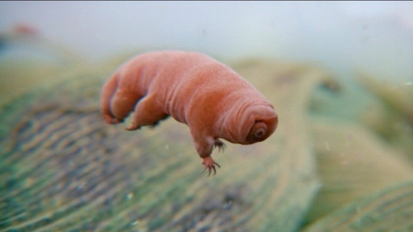
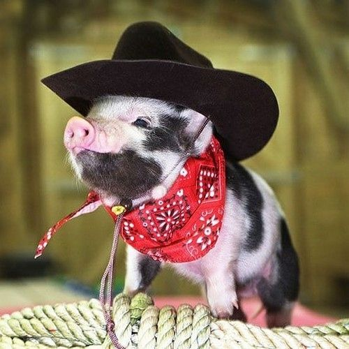

Welcome to Toronto
Shark

For more information about shark. Click on this link
Fun Facts
- There are over 400 different species of sharks
- Baby sharks are called pups
- In Fiji and the Solomon Islands it is forbidden to eat sharks
Tardigrade
The Indestructible Beast!
Check them out here.
- More than a 1,150 species of Tardigrades have been identified so far since 1778.
- Tardigrades have sharp dagger-like teeth in their tubular mouth that they use to spear other living organisms and algae. They are usually feed on bacteria or plant cells (known as bacteriophagous and phytophagous respectively) but there are a few other species that are predatory by nature and feed on other smaller animals.
- These Tardigrades are way tougher that what scientists found in temperature fluctuation experiments. Tardigrades can live for a decade (10 years) without food and water! They even found one in a 120-year old dried moss which reported a leg movement!

Teacup Pig
Also known as micro pig,miniature pig,etc.
Check out more about this awesome pig here
- Pigs are the 3rd smartest animal alongside dolphins and chimpanzees
- Pigs can swim
- Pigs have the ability to solve complex problems